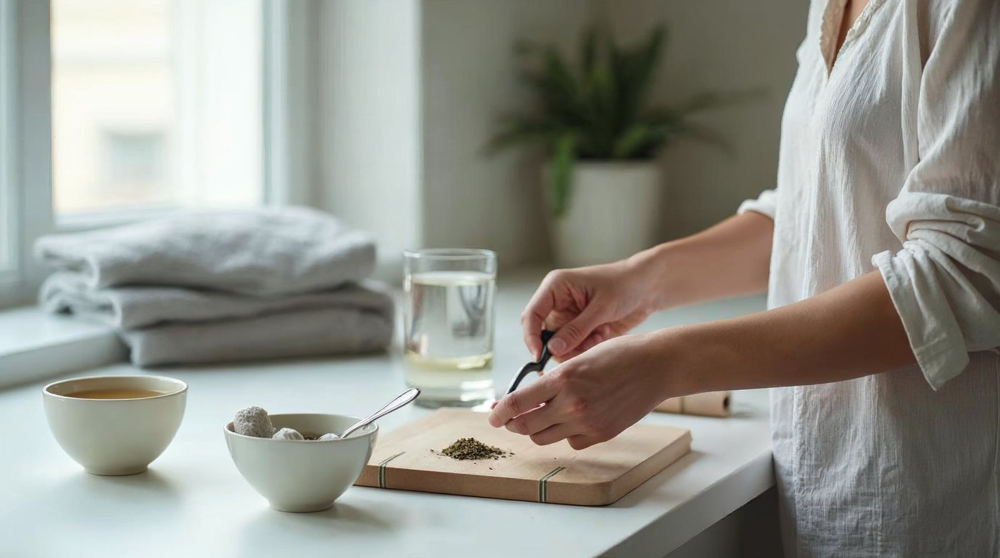
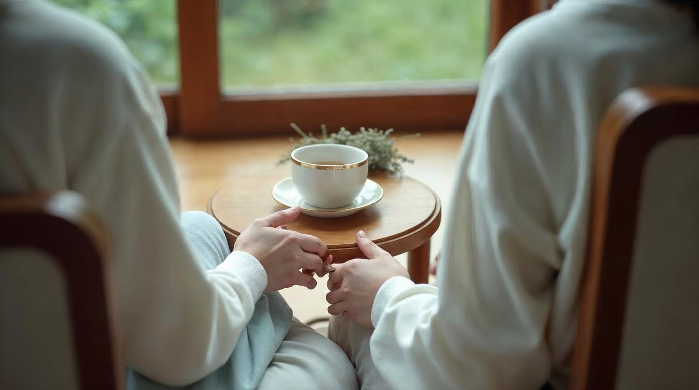
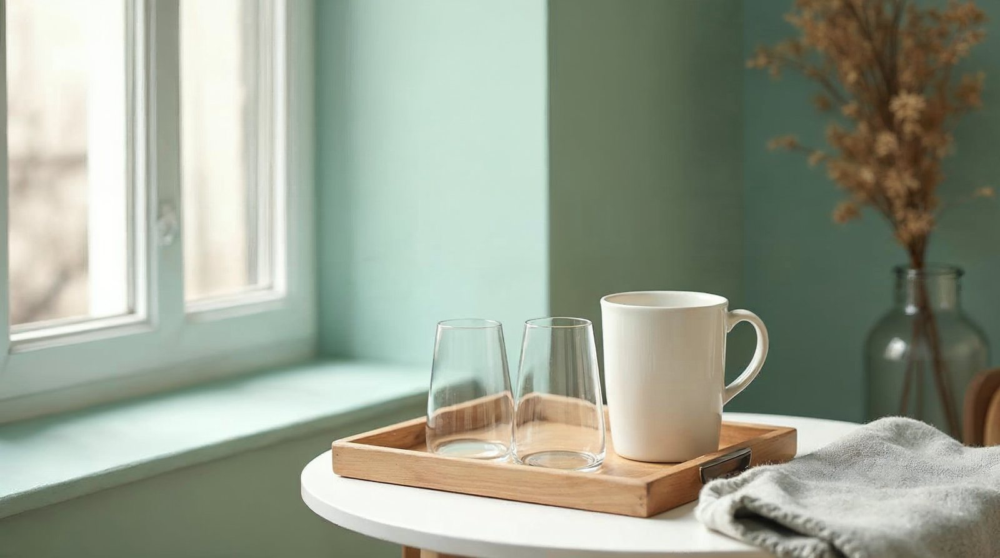
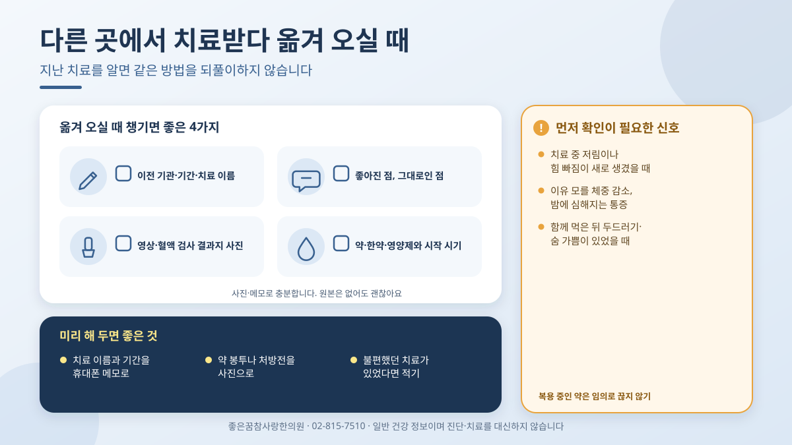

이종호 한의사 감수좋은꿈참사랑한의원 대표원장 (한의사 면허번호 19769)발행 2026-11-24 · 수정 2026-11-26
이 글의 차례
- 왜 이전 치료 내용을 알려 주시면 좋을까요
- 왜 처음 불편해진 시기가 중요할까요
- 어떤 내용을 알려 주시면 가장 도움이 될까요?
- 기록이 있어도 왜 처음부터 다시 진찰하나요?
- 오래된 불편일수록 왜 생활 이야기가 중요할까요?
- 먼저 이렇게 여쭙니다
- 일상에서 먼저 해 볼 수 있는 것
- 상황별 예시
- 집에서 미리 해 둘 수 있는 정리 방법
- 이전 치료 뒤 불편했던 반응은 어떻게 알려 주실까요?
- 오래 치료를 받았는데 그대로라면 어떻게 말씀하실까요?
- 옮기기 전에 이전 의료기관에서 들어 두면 좋은 것
- 여러 곳을 함께 다니고 계시다면
- 한약을 드시다 옮겨 오셨다면
- 스스로 점검해 보세요
- 옮겨 오신 분들이 자주 걱정하시는 점
- 병원 치료와 함께 받는다면 무엇을 알려 주실까요?
- 결과지는 어떻게 보여 주시면 좋을까요?
- 한의원에서 함께 살필 수 있는 경우
- 첫 방문은 어떻게 진행되나요?
- 다니던 곳과 진료 방식이 다르면 어떻게 하나요?
- 진료 중에 궁금한 점은 어떻게 여쭈면 될까요?
- 언제 처음 오시면 좋을까요?
- 얼마나 지켜보고 언제 상담할까요?
- 이렇게 기록해 오시면 상담이 쉬워집니다
- 이런 증상은 먼저 확인이 필요합니다
이사를 왔거나, 직장이 바뀌었거나, 진료 시간이 맞지 않아 다니던 곳을 옮기는 분이 많습니다. 상도동으로 이사 오신 뒤 전에 다니던 곳에서 받은 치료 이야기부터 꺼내시는 분도 자주 계십니다. 이전 치료의 흐름을 알면 지금 무엇부터 살필지 정하기가 훨씬 수월해집니다.
저는 옮겨 오신 분께 이전 치료가 맞았는지 틀렸는지를 따지기보다, 그동안 몸이 어떤 길을 지나왔는지를 듣고 싶다고 말씀드립니다. 이 글에서는 무엇을 어떻게 알려 주시면 좋은지 정리했습니다.
왜 이전 치료 내용을 알려 주시면 좋을까요
다니던 곳을 옮기면 같은 이야기를 처음부터 다시 해야 해서 지치기 쉽습니다.
- 그동안 받은 치료 이름과 기간이 기억에서 섞여 정확히 전하기 어렵습니다.
- 검사 결과지가 이전 의료기관에만 있어 비교가 어려울 수 있습니다.
- 양약과 한약, 영양제를 함께 드시는 경우 무엇을 언제부터 먹었는지 헷갈리기 쉽습니다.
- 달라진 점과 그대로인 점이 정리되지 않으면 무엇을 이어 가고 무엇을 바꿀지 정하기 어렵습니다.
왜 처음 불편해진 시기가 중요할까요
불편이 언제, 어떤 일 뒤에 시작됐는지는 원인을 짐작하는 첫 실마리입니다. 이사, 이직, 출산, 큰 시험처럼 생활이 크게 바뀐 시기와 겹치는 경우가 많습니다.
예를 들어 새 직장에서 책상과 의자가 바뀐 뒤 목이 뻐근해졌다면, 그동안의 치료와 함께 일하는 자리를 함께 살펴야 합니다. 정확한 날짜가 아니어도 "작년 겨울쯤", "이사 온 뒤"처럼 대략 떠올려 주시면 충분합니다.
어떤 내용을 알려 주시면 가장 도움이 될까요?
모든 기록을 완벽하게 챙기실 필요는 없습니다. 제가 가장 도움을 받는 것은 네 가지입니다. 언제 처음 불편해졌는지, 어떤 치료를 얼마 동안 받았는지, 그 뒤 무엇이 달라졌는지, 지금 무엇을 드시는지입니다.
치료 이름이 기억나지 않으면 "목에 침을 맞고 따뜻한 찜질을 했다", "뼈를 맞추는 듯한 치료를 받았다"처럼 받으신 모습을 그대로 말씀해 주셔도 충분합니다.
기록이 있어도 왜 처음부터 다시 진찰하나요?
가져오신 기록은 지나온 길을 보여 주지만, 오늘의 몸 상태는 그날 직접 살펴야 알 수 있습니다. 그래서 기록을 참고하면서도 맥을 다시 짚고, 불편한 동작을 처음부터 함께 확인합니다.
예전 검사에서 이상이 없었더라도 그 뒤 생활이 바뀌었거나 새로운 불편이 더해졌을 수 있습니다. 반대로 예전 기록에 있던 문제가 지금은 크게 드러나지 않을 수도 있어, 두 가지를 나란히 놓고 봅니다.
이렇게 하면 이어 갈 것과 바꿔 볼 것을 구분하기 쉬워집니다. 같은 이야기를 반복하시는 수고는 가져오신 메모로 줄이고, 진찰은 꼼꼼히 하는 것이 제가 지키려는 순서입니다.
맥을 짚고 떠올린 제 생각도 환자분의 대답에 따라 고칠 여지가 있습니다. 제 짐작과 다르다고 말씀하시면 저는 거기서부터 다시 듣습니다. 자기 몸에서 언제 무슨 일이 일어나는지 가장 오래 지켜본 분은 바로 그분이기 때문입니다.
한 번 오신 뒤부터는 이곳의 진료 기록이 이어집니다. 담당 원장이 다른 날에도 이전 기록을 보고 이어서 진료합니다.
오래된 불편일수록 왜 생활 이야기가 중요할까요?
여러 곳을 다니며 치료를 받아 오신 분은 이번에는 무엇을 해 주는지부터 궁금해하시곤 합니다. 저는 그 전에 하루를 어떻게 보내시는지부터 여쭙습니다.
치료를 받을 때는 조금 편하다가 다시 돌아오는 불편이라면, 매일 반복되는 자세나 잠, 식사 습관이 그 불편을 다시 불러오는 경우가 있습니다. 예를 들어 하루 열 시간 앉아 있는 생활이 그대로라면, 같은 자리가 다시 뻐근해지기 쉽습니다.
그래서 이전 치료 이야기와 함께 일하는 자세, 잠드는 시각, 운동 습관을 함께 들려주시면 이어 갈 것과 바꿔 볼 것을 더 분명하게 정할 수 있습니다.
먼저 이렇게 여쭙니다
- 이전에 어떤 치료를 얼마 동안 받으셨나요?
- 그동안 달라진 점과 그대로인 점은 무엇인가요?
- 받으신 영상 검사나 혈액 검사 결과가 있나요?
- 지금 드시는 양약, 한약, 영양제가 있나요?

일상에서 먼저 해 볼 수 있는 것
- 받았던 치료 이름과 기간을 휴대폰 메모에 정리하기
- 영상 검사 결과지나 판독지는 사진으로라도 챙기기
- 복용 중인 약은 약 봉투나 처방전을 사진으로 찍어 두기
- 받았을 때 불편했던 치료가 있었다면 미리 적어 두기
상황별 예시
- 예를 들어 이사 때문에 다니던 한의원을 옮기신 경우, 예전에 받던 치료의 간격과 횟수를 알려 주시면 지금 생활에 맞게 방문 간격을 다시 정하는 데 도움이 됩니다.
- 예를 들어 정형외과에서 물리치료와 약 처방을 받으며 한의원 진료도 함께 받고 싶은 경우, 처방받은 약 이름과 다음 병원 예약일을 알려 주시면 순서를 함께 정할 수 있습니다.
- 예를 들어 이전에 지어 드신 한약이 몸에 맞지 않았던 기억이 있는 경우, 그때 생긴 불편(속쓰림, 묽은 변, 두근거림 등)과 드신 기간을 알려 주시면 처방을 정할 때 참고합니다.
집에서 미리 해 둘 수 있는 정리 방법
휴대폰 메모장에 "처음 불편해진 때 / 다닌 곳과 기간 / 받은 치료 / 달라진 점 / 지금 먹는 약" 다섯 줄만 만들어 두세요. 한 줄에 한두 단어씩만 적어도 진료실에서 이야기가 훨씬 빨리 이어집니다.
이전 의료기관에 진료 기록을 요청할 수 있는지는 그곳에 직접 문의해 보세요.
이전 치료 뒤 불편했던 반응은 어떻게 알려 주실까요?
치료를 받은 뒤 하루 이틀 몸살처럼 뻐근했는지, 멍이 들었는지, 어지럽거나 속이 불편했는지 같은 반응은 꼭 알려 주세요. 그 반응이 언제 시작돼 며칠 갔는지도 함께 말씀해 주시면 좋습니다.
침을 맞는 것이 무섭거나 특정 자세가 힘들었던 기억도 중요한 정보입니다. 미리 말씀해 주시면 오늘의 방법과 세기, 자세를 그에 맞춰 정하고, 진행하는 동안에도 불편하면 바로 멈출 수 있게 합니다.
저는 치료가 되도록 편안해야 한다고 생각합니다. 그래서 세게 하기 전에 먼저 여쭙습니다. 전에 어지러웠던 적이 있는지, 드시는 약은 무엇인지, 오늘 기운은 어떤지입니다.
오래 치료를 받았는데 그대로라면 어떻게 말씀하실까요?
"오래 다녔는데 그대로예요"라는 말씀도 충분히 도움이 됩니다. 다만 무엇이 그대로인지 조금만 나눠 주시면 더 좋습니다. 아픈 자리, 세기, 불편한 시간대 가운데 어느 것이 변하지 않았는지입니다.
예를 들어 치료 직후에는 가볍다가 사흘쯤 지나 다시 무거워지는 경우와, 받는 날에도 거의 차이가 없는 경우는 다음 순서를 정하는 방법이 다릅니다. 치료 직후, 다음 날, 사흘 뒤의 느낌을 떠올려 말씀해 주세요.
옮기기 전에 이전 의료기관에서 들어 두면 좋은 것
- 들으신 진단명이나 몸 상태에 대한 설명
- 당분간 피하라고 들은 동작이나 음식
- 마지막으로 치료를 받은 날짜와 그날 받은 치료
이 세 가지는 따로 서류가 없어도 기억만으로 전해 주실 수 있습니다. 마지막 치료 날짜를 알면 치료가 얼마나 끊겼는지 알 수 있어, 오늘 상태를 읽을 때 참고가 됩니다.
여러 곳을 함께 다니고 계시다면
정형외과, 다른 한의원, 마사지 같은 곳을 함께 다니는 분도 있습니다. 그런 사실을 말씀하시기 망설여질 수 있지만, 알려 주셔야 어떤 일이 몸에 영향을 주는지 나눠 볼 수 있습니다.
같은 날 여러 치료가 겹치면 그다음 날의 뻐근함이 어디서 왔는지 알기 어렵습니다. 다니시는 곳과 요일을 알려 주시면 치료가 몰리지 않도록 일정을 함께 정리합니다.
한약을 드시다 옮겨 오셨다면
다른 곳에서 지은 한약을 드시는 중이라면 언제부터 드셨는지, 드시는 동안 소화와 잠, 대변이 어땠는지도 함께 여쭙습니다.
이어 드실지, 잠시 쉬고 다시 살필지는 지금 몸 상태와 함께 드시는 다른 약을 보고 정합니다. 드시는 동안 불편한 반응이 있다면 복용을 멈추고 지어 준 곳에 먼저 알려 주세요.
스스로 점검해 보세요
- 처음 불편이 시작된 시기를 대략이라도 말할 수 있다
- 이전에 다닌 의료기관 이름과 다닌 기간을 적어 두었다
- 받은 치료가 무엇이었는지 이름이나 모습으로 설명할 수 있다
- 치료 뒤 달라진 점과 그대로인 점을 한두 줄로 정리했다
- 지금 드시는 약, 한약, 영양제를 모두 적었거나 사진으로 남겼다
- 이전 치료에서 불편했던 점이나 피하고 싶은 방법을 떠올려 보았다
- 임신 중이거나 임신 가능성이 있는지 확인했다
모두 채우지 못해도 괜찮습니다. 기억나는 만큼만 가져오시면 진료실에서 함께 정리합니다.
특히 지금 드시는 약과 임신 가능성은 치료 방법과 한약 상담을 정할 때 먼저 확인하는 내용이라, 이 두 가지만큼은 처음에 꼭 말씀해 주세요. 나머지는 진료를 이어 가며 천천히 채워도 괜찮습니다.
옮겨 오신 분들이 자주 걱정하시는 점
- 전에 다니던 곳 이야기를 하면 실례가 아닐까 걱정하시는 분이 있는데, 전혀 그렇지 않습니다. 이전 치료 내용은 오늘 진료를 정하는 데 중요한 정보입니다.
- 처음부터 다시 오래 다녀야 하는지 물으시면, 방문 간격과 기간은 진찰 뒤 지금 상태를 보고 함께 정하고 지내 보시면서 조정한다고 말씀드립니다.
이전과 다른 방법을 권해 드리면 예전 치료가 잘못된 것이냐고 물으시는 분도 있습니다. 그렇지 않습니다. 그때와 지금은 몸 상태도 생활도 달라졌을 수 있어, 방법이 달라지는 것은 자연스러운 일입니다.
병원 치료와 함께 받는다면 무엇을 알려 주실까요?
정형외과나 내과에 다니시면서 한의원 진료를 함께 받으시는 분도 많습니다. 이럴 때는 병원에서 받은 진단명, 처방받은 약, 다음 진료 예정일을 알려 주세요.
주사 치료나 물리치료를 받은 날이 언제인지 알면, 한의원 치료를 어느 날에 이어 갈지 정하기 쉽습니다. 병원에서 처방받은 약은 처방한 의사와 상의 없이 줄이거나 끊지 마시고, 한약 상담을 할 때는 그 약 목록을 함께 보고 정합니다.
결과지는 어떻게 보여 주시면 좋을까요?
영상 검사 결과는 사진 파일보다 판독지(글로 적힌 결과)를 찍어 오시는 편이 보기 쉽습니다. 혈액 검사는 결과지 전체를 찍어 오시면 날짜와 수치를 함께 볼 수 있습니다.
같은 검사를 여러 번 받으셨다면 날짜 순서대로 정리해 오시면 변화를 살피기 좋습니다. 휴대폰 사진첩에 '진료' 같은 앨범을 하나 만들어 모아 두시면 다음 방문 때도 편합니다.

한의원에서 함께 살필 수 있는 경우
- 이전 치료 경과를 참고하되, 오늘의 몸 상태는 맥부터 새로 짚으며 살핍니다.
- 오래 이어 온 불편이라면, 생활 리듬과 동작까지 함께 다시 살핍니다.
- 필요하면 검사가 가능한 다른 의료기관을 안내해 드립니다.
좋은꿈참사랑한의원에서는 모든 분께 맥부터 짚으며, 가져오신 기록을 함께 보고 지금 불편한 점을 여쭙습니다. 필요하다고 판단되면 혀(설진)를 보거나 초음파로 더 살핀 뒤 침·약침·추나·한약 상담 등 지금 상태에 맞는 방법을 정합니다. 귀가 전에는 집에서 지켜볼 점과 다음 진료에서 확인할 일을 알려 드립니다.
첫 방문은 어떻게 진행되나요?
접수 때 기본 정보를 적으시면, 진료실에서는 모든 분의 맥을 먼저 짚고 가져오신 메모와 결과지를 함께 봅니다. 그다음 지금 가장 불편한 점과 일상에서 힘든 동작을 여쭙고, 잠·소화·대소변 같은 몸 전체의 리듬도 확인합니다.
진찰 뒤에는 오늘 어떤 방법을 쓰는지, 이전 치료와 무엇이 같고 다른지를 먼저 설명드리고 진행합니다.
다니던 곳과 진료 방식이 다르면 어떻게 하나요?
한의원마다 진찰 순서나 쓰는 방법, 방문 간격이 조금씩 다를 수 있습니다. 예전과 달라 낯선 부분이 있다면 그 자리에서 편하게 물어보세요. 왜 이 순서로 하는지, 무엇을 살피려는지 설명드립니다.
진료 중에 궁금한 점은 어떻게 여쭈면 될까요?
치료를 받는 동안 "이건 왜 하는 건가요?", "전에 받던 것과 무엇이 다른가요?"처럼 궁금한 점이 생기면 그 자리에서 물어보세요. 질문을 미리 휴대폰 메모에 적어 오시면 잊지 않고 여쭐 수 있습니다.
설명을 듣고도 마음이 놓이지 않는 방법이 있다면 솔직하게 말씀해 주세요. 다른 방법이 있는지 함께 살펴봅니다.
질문이 많다고 미안해하실 필요는 없습니다. 알고 받으시는 치료가 마음도 편하고, 집에서 이어 갈 일도 더 잘 기억하실 수 있습니다.
언제 처음 오시면 좋을까요?
처음 오시는 날은 진찰 시간이 있어 다시 오실 때보다 오래 걸릴 수 있으니, 시간 여유를 두고 오시면 좋습니다.
진료 시간은 평일 09:30~20:00(점심 13:00~14:00), 토·일·공휴일 09:30~15:00(점심시간 없음)입니다. 원장별 진료 일정은 방문 전 전화로 확인해 주세요.
얼마나 지켜보고 언제 상담할까요?
- 옮기는 사이 치료가 잠시 끊겼더라도 불편이 비슷하게 유지된다면, 편한 때 예약하고 그동안 상태를 기록해 두셔도 됩니다.
- 치료를 쉬는 동안 불편이 점점 커지거나 일상 동작이 어려워진다면 미루지 말고 상담을 받아 보세요.

이렇게 기록해 오시면 상담이 쉬워집니다
- 이전 의료기관 이름, 다닌 기간, 받은 치료 이름
- 치료를 받은 뒤 달라진 점과 그대로인 점 한두 줄
- 영상·혈액 검사 결과지 사진
- 복용 중인 약, 한약, 영양제 목록과 시작한 시기
다니던 곳을 옮기는 결정도 쉽지 않으셨을 겁니다. 오시는 날에는 처음 불편해진 때가 언제였는지부터 천천히 여쭙겠습니다.
이런 증상은 먼저 확인이 필요합니다
- 치료를 받는 중에도 저림이나 힘 빠짐이 새로 생기거나 심해지는 경우
- 원인을 모르는 체중 감소나 밤에 심해지는 통증이 있는 경우
이런 신호가 있으면 한의원보다 가까운 병원이나 응급실을 먼저 찾으세요.

여쭙는 것
- 이전에 어떤 치료를 얼마 동안 받으셨나요?
- 그동안 달라진 점과 그대로인 점은 무엇인가요?
- 받으신 영상 검사나 혈액 검사 결과가 있나요?
생활에서 해 볼 것
- 받았던 치료 이름과 기간을 휴대폰 메모에 정리하기
- 영상 검사 결과지나 판독지는 사진으로라도 챙기기
- 복용 중인 약은 약 봉투나 처방전을 사진으로 찍어 두기
한의원에서 함께 살필 것
- 이전 치료 경과를 참고하되, 오늘의 몸 상태는 맥부터 새로 짚으며 살핍니다.
- 오래 이어 온 불편이라면, 생활 리듬과 동작까지 함께 다시 살핍니다.
- 필요하면 검사가 가능한 다른 의료기관을 안내해 드립니다.
먼저 확인이 필요한 신호
- 치료를 받는 중에도 저림이나 힘 빠짐이 새로 생기거나 심해지는 경우
- 원인을 모르는 체중 감소나 밤에 심해지는 통증이 있는 경우
한눈에 보는 표
| 구분 | 핵심 |
|---|---|
| 여쭙는 것 | 이전에 어떤 치료를 얼마 동안 받으셨나요? 그동안 달라진 점과 그대로인 점은 무엇인가요? |
| 생활에서 해 볼 것 | 받았던 치료 이름과 기간을 휴대폰 메모에 정리하기 영상 검사 결과지나 판독지는 사진으로라도 챙기기 |
| 한의원에서 함께 살필 것 | 이전 치료 경과를 참고하되, 오늘의 몸 상태는 맥부터 새로 짚으며 살핍니다. 오래 이어 온 불편이라면, 생활 리듬과 동작까지 함께 다시 살핍니다. |
| 먼저 확인이 필요한 신호 | 치료를 받는 중에도 저림이나 힘 빠짐이 새로 생기거나 심해지는 경우 원인을 모르는 체중 감소나 밤에 심해지는 통증이 있는 경우 |
자주 묻는 질문
이전 진료 기록을 꼭 떼어 와야 하나요?
꼭 필요하지는 않습니다. 기억나는 내용과 결과지 사진만으로도 충분히 도움이 됩니다.
다니던 곳과 같은 치료를 받을 수 있나요?
진찰 후 지금 상태에 맞는 방법을 함께 정하며, 같은 방법이 필요한지도 그때 판단합니다.
이전 한의원에서 지은 한약이 남아 있는데 가져가도 되나요?
네. 남은 한약이나 처방 내용을 알 수 있는 자료를 가져오시면 지금 몸 상태와 드시는 다른 약을 함께 보고 이어 드셔도 될지 살펴볼 수 있습니다. 병원에서 처방받아 드시던 약은 처방한 의사와 상의 없이 끊지 마시고 그대로 알려 주세요.
여러 곳을 다녀 기억이 뒤섞였는데 어떻게 하나요?
가장 최근에 다닌 곳부터 거꾸로 떠올려 보세요. 기억나지 않는 부분은 진료실에서 질문을 드리며 함께 채워 갑니다.
좋은꿈참사랑한의원은 재진 때 지난번 이야기부터 이어서 여쭙니다. 진료시간과 예약은 오시는 길에서 확인하세요.
어디서 상담받을 수 있나요?
좋은꿈참사랑한의원은 서울 동작구 만양로2길 2 신성빌딩 3층·5층(서울 동작구 상도동, 7호선 상도역 3번 출구 근처)에 있습니다. 한의사 3명(이종호 대표원장, 조영기 수석진료원장, 정원영 진료원장)이 진료합니다. 진료시간은 평일 09:30~20:00(점심 13:00~14:00), 토·일·공휴일 09:30~15:00이며, 방문 전 전화로 확인을 권합니다. 예약은 네이버 예약, 카카오톡 상담, 전화 02-815-7510로 받습니다.
이 글은 일반적인 건강 정보이며 개인의 진단이나 치료를 대신하지 않습니다. 증상이 있거나 복용 중인 약이 있다면 진료를 통해 확인하세요. 치료 효과는 개인마다 다를 수 있습니다.
작성 기준: 일반적으로 알려져 있는 건강 정보를 참고해 정리했습니다(대표원장 감수). 증상 기록은 1~2주 동안 하루 1회, 비슷한 시간에 적어 오시면 지난 상태와 비교하기 쉽습니다.